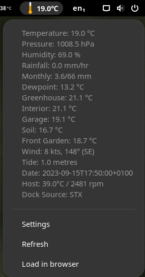

![[diagram]](sensors.svg){kind=link}

Mini ITX box with blue USB adaptor for 1-Wire network
This page describes the technical implementation of our weather station. Current and logged weather data is viewable on the weather station data page.
The weather station started as a requirement to be able the monitor the temperature in Daria's greenhouse, which is about 20m from the house. Commercial wireless weather stations did not really met the requirement, as they were either inflexible from a point of being able to add additional sensors, or somewhat expensive for a flexible set up.
After a bit of research, we built a sensor network based on the Dallas Semiconductors one wire system. This allows us to add sensors as we require. The 1 wire network runs on telephone cable, from a computer in the sitting room (with interior temperature), along the back of the house to a "repeater" (DS2409) box in the garage, and then along the garden to the greenhouse, where there are internal temperature and external soil temperature sensors, as well as heated seed propagator temperatures in season. Rain fall, humidity, pressuure and temperature sensors have been attached to the north wall of the garage and in a wooden box on a well shaded path at the side of house. The cabling runs in a fairly disorganised star topology with a HobbyBoards DS2409 hub providing stability and range ( [diagram]).
The garden is surrounded by trees, so we dispensed with the anemometer, instead obtaining that data from the SotonMet WAP feed.
Mini ITX box with blue USB adaptor for 1-Wire network
The USB interface and initial sensors were acquired from Audon Electronics. Some additional DS18S20 (temperature-only) sensors were acquired from Quasar Electronics and assembled from these instructions. One transistor sized chip, two wires. So simple. The coupler, pressure (barometer), humidity and solar sensors came from Hobby Boards.
There are images of our setup in the image gallery. Most of the images on this page link to larger images when clicked.
The acquisition and logging system currently runs on an Intel D525MW ITX based machine, with ArchLinux as the OS. Earlier iterations ran on Ubuntu , initially on an Epia MiniITX 600Mhz computer (more than enough for w1retap), and more rcently, an MSI Industrial Intel Atom (IM-945GSE-A) ITX board. w1retap will run on 32 or 64 bit OS, on both big and little endian architectures.
The data aquistion software will run on small CPUs, including ARM, and has been tested on a Raspberry Pi. It also runs on RISCV64 boards such as the StarFive Vision Five 2.
The software, w1retap, is based on the Dallas/Maxim public domain reference implementation, and is responsible for logging the sensor data.
The 1-wire network is polled every 2 minutes for data, which is logged to a postgresql SQL database. A set of Ruby scripts periodically update this site and feeds data to wunderground.com (we're the Netley Marsh station). There is also an GNOME applet (GNOME 2 and GNOME 3).

"Just some random weather in Netley Marsh"
w1retap currently supports (at least) the following sensors:
w1retap logs sensors readings using one or more "plugin" modules, these currently include:
w1retap (GPL)
The 1-wire sensors (other than the temperature sensor in Daria's greenhouse), are housed in a home made enclosure in a shady and covered passage. The rain guage shown is the old TAI8575 that had been modified (by having a funnel located above its collector) to have a larger collection area (to give 0.0105" of rain per bucket tip, compared to 0.0204" in the original). This is now replaced by the Hobby Board's offering.
 and pressure sensors in housing")
Humidity (and outside temperature) and pressure sensors in housing
 and pressure sensors in housing")
Humidity (and outside temperature) and pressure sensors in housing
 RainSensor (and funnel) housed on end of garage")
(old) Rain sensor (and funnel)
 housed on end of garage")
(old) Rain sensor (and funnel)

Unmodified (old) Rain sensor

Pertelian LCD Display
This site is brought to you by Jonathan Hudson (who does the computer bits) and Daria Hudson, who, as well as being much better looking, also does the gardening.